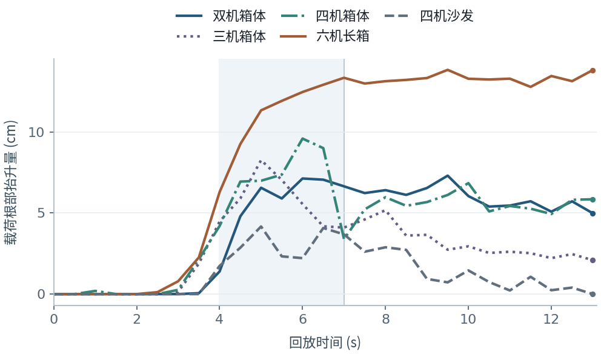
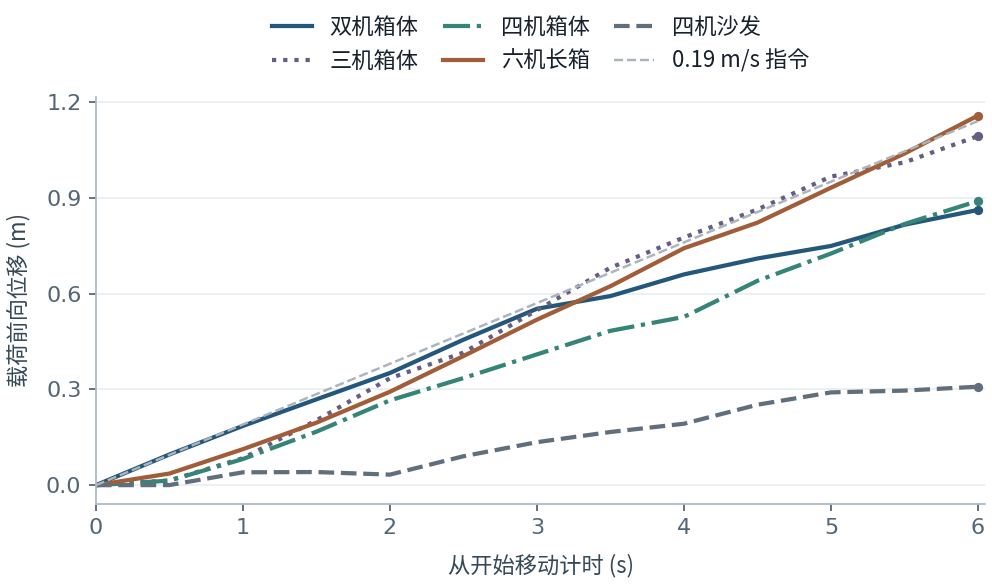
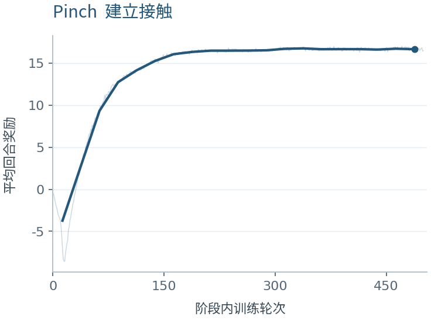
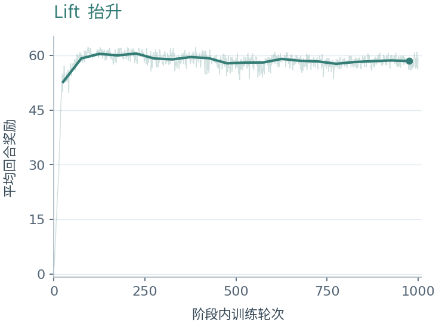
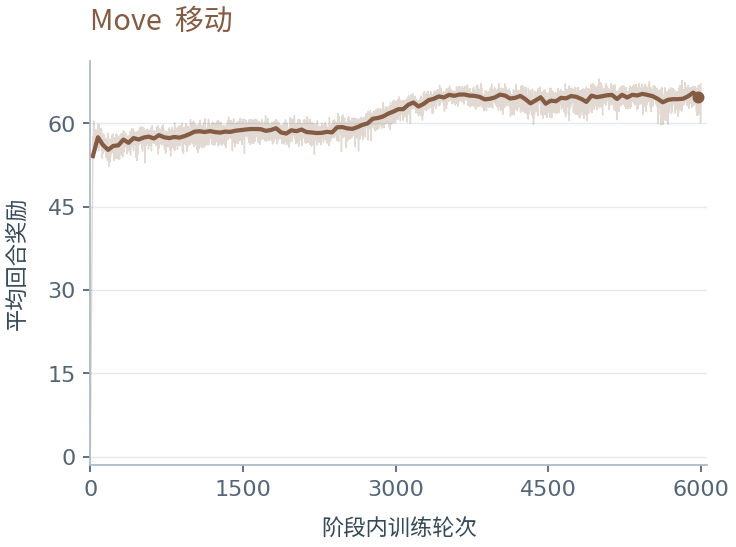

Multi-agent PPO / CTDE / Isaac Lab
四足机器人协同夹持与搬运
多台 Go2 + D1 怎样在各自做决策的情况下，用机械臂末端夹住同一件物体，并同步抬升与移动？
同一套策略，从双机到六机
载荷的目标指令包含平面速度、偏航角速度与抬升高度。机器人根据各自的本体状态和分配到的接触位姿调整底盘与机械臂，协同发生在共同载荷上。
相同指令下的载荷运动




论文实验。 原文在 2–10 台机器人的箱体搬运中对照了关键点奖励和接触帧可用性。关键点奖励在不同编队规模下均降低了速度跟踪误差和落箱率。论文第 VI 节 ↗
局部观测、共享策略、分层执行
- 52 维局部观测本体状态、载荷指令、相对接触位姿和上一步动作
- 共享 Actor128 × 128 MLP，每台机器人独立运行一份
- 9 维高层动作3 维机身速度指令 + 6 维 D1 关节位置偏移
- 关节位置控制Go2 速度策略生成 12 维腿部目标，D1 接收 6 维关节目标
| 网络 | 输入 | 输出与用途 |
|---|---|---|
| 共享 Actor · 52 维 | 本机的关节位置、机身角速度和投影重力、接触帧相对位姿、载荷指令与动作历史等 | 9 维动作均值。执行时每台机器人使用相同参数，输入维度与队伍规模无关。 |
| 集中 Critic · 104 维 | 双机训练时，将本机与另一台机器人的 Critic 观测拼接为 52 × 2 维 | 估计当前机器人的价值，为 PPO 提供优势估计。集中信息在训练中使用。 |
200 Hz 物理步进与 50 Hz 策略决策
Go2 腿部关节目标
D1 机械臂关节目标
- Decimation = 4。 物理每 5 ms 更新，4 个物理步执行一次高层策略。腿部速度策略每 4 个物理步推理一次，关节目标由物理步内的位置控制跟踪。
- 底盘与机械臂分通道。 底盘动作经过命令限幅和死区后送入 Go2 速度策略，腿关节目标在默认姿态上叠加 0.25 倍输出。D1 在默认关节姿态上叠加 0.5 倍输出，再按关节限位裁剪。
- 接触帧随载荷运动。 接触点和法向定义在载荷坐标系中，再转为各自机身坐标系下的观测。机器人数量或载荷几何改变时，可以重布接触点并复用策略。
关键点奖励把位置与朝向放在同一尺度
匹配关键点的均方距离
末端接触与底盘跟随
- 末端接触。 用沿接触垫法向排列的 5 个点对齐物体接触帧。位置或法向偏差都会增大距离，同时保留绕法向旋转的自由度。
- 机身跟随。 用 3 个非共线点约束底盘与载荷运动指令的几何关系，使速度跟踪与接触维持协同。
- 阶段奖励和约束。 接触阶段奖励贴合，抬升阶段加入载荷高度跟踪，移动阶段加入速度跟踪。动作变化、关节运动、载荷倾斜与偏离接触区域作为约束信号。
接触、抬升、移动的三阶段课程
训练在阶段之间接续检查点。先学末端贴合，再引入载荷高度指令，最后加入平面与偏航速度指令。完整课程包含 500、1,000 和 6,000 轮更新。






浅线是逐轮平均回合奖励，深线是分段中位数。Pinch 每 25 轮统计，Lift 和 Move 每 50 轮统计。每个阶段使用各自的奖励设置与纵轴。
- Pinch。 平稳建立接触，阶段末段奖励中位数为 16.67。
- Lift。 从上一阶段检查点加入抬升目标，阶段末段奖励中位数为 58.41。
- Move。 加入水平移动与转向，约第 3,000 轮后进入较高奖励区间，末段奖励中位数为 64.77。
PPO 用 KL 散度调节学习率
每个小批次比较更新前后对角高斯策略的 均值。KL 先沿动作维求和，再对小批次取平均。目标为 0.01。
每个动作维度的高斯 KL 项
| 小批次平均 KL | 学习率更新 | 作用 |
|---|---|---|
| 大于 0.02 | 除以 1.5，下限 10−5 | 缩小后续步幅 |
| 大于 0 且小于 0.005 | 乘以 1.5，上限 10−2 | 提高后续更新幅度 |
| 其余情况 | 沿用当前学习率 | 维持当前更新节奏 |
方法参考 Pandit、Shrestha 与 Fern，ICRA 2026。论文 ↗